Introducción
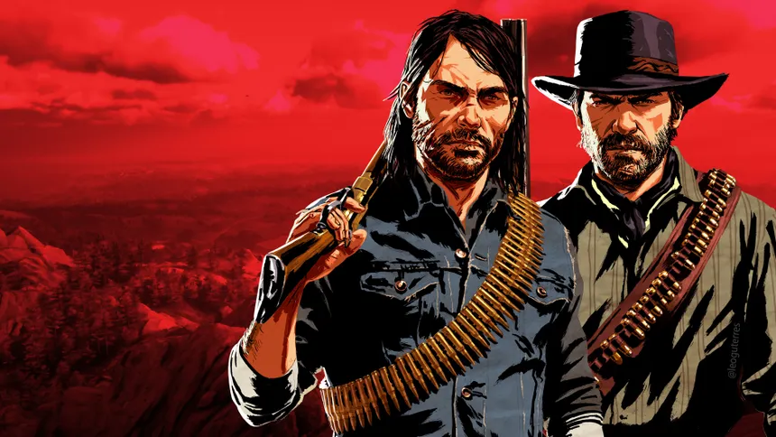
La saga Red Dead Redemption cuenta una de las historias más profundas del mundo de los videojuegos, centrada en la caída del Viejo Oeste y el destino de los últimos forajidos. A través de dos juegos principales, seguimos el viaje de Arthur Morgan y John Marston, explorando temas como la lealtad, la traición, la redención y el paso del tiempo.
La cronología comienza con Red Dead Redemption 2, donde vemos el inicio del fin para la banda de Dutch van der Linde, y continúa con Red Dead Redemption, donde John Marston intenta dejar atrás su pasado, aunque el mundo no se lo permita.
Red Dead Redemption – Historia completa
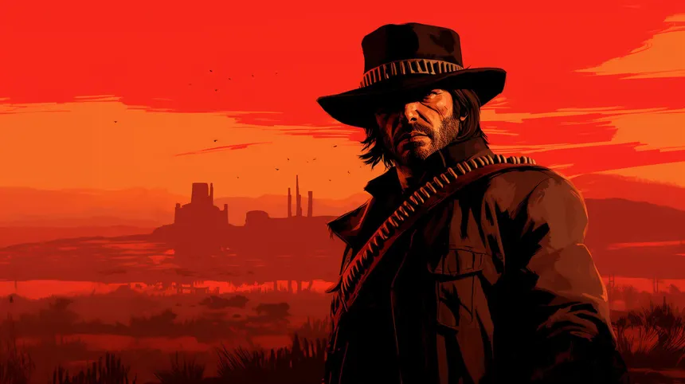
Red Dead Redemption continúa la historia iniciada en Red Dead Redemption 2 y lleva al universo de la saga a su cierre más melancólico y definitivo. La historia ocurre en 1911, cuando el Viejo Oeste ya casi ha desaparecido por completo y el mundo está entrando en una nueva era marcada por el control del gobierno, la industrialización, la modernización de las ciudades y el final de la vida de los forajidos. John Marston intenta dejar atrás su pasado criminal y construir una vida tranquila con su esposa Abigail y su hijo Jack, pero el mundo no le permite escapar tan fácilmente.
Esta entrega tiene un tono distinto al de la precuela: aquí ya no vemos el comienzo de una caída, sino las consecuencias finales de todo lo que ocurrió antes. John es obligado por el gobierno a perseguir a los últimos miembros de la vieja banda de Dutch van der Linde, y ese encargo lo arrastra nuevamente al mismo tipo de violencia que intentó abandonar. La historia se convierte así en una reflexión sobre la redención, la manipulación del poder y el precio de querer ser libre en un mundo que ya decidió reemplazarte.
Capítulo 1 – Un hombre que quiere dejar el pasado atrás
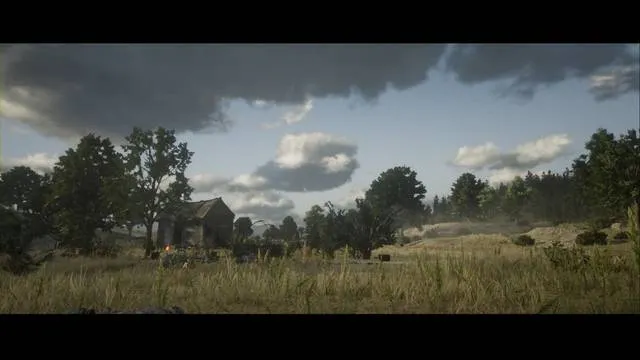
Al comienzo del juego, John Marston vive en Beecher’s Hope junto a su familia. Después de años de violencia, robos y persecuciones, por fin parece haber encontrado una pequeña paz. Su rutina ya no está ligada a las armas ni al caos de la banda. Ahora quiere trabajar la tierra, cuidar a Abigail y ver crecer a Jack lejos del mundo que él conoció.
Sin embargo, esa tranquilidad es muy frágil. John no es un hombre libre de verdad, porque su pasado sigue pesando sobre él como una sombra imposible de borrar. El gobierno conoce quién fue, sabe lo que hizo y entiende perfectamente que puede usarlo para terminar una tarea que ellos mismos no quieren hacer directamente.
Ese contraste entre la vida tranquila que desea y la violencia que lo persigue define toda la historia. John no busca grandeza, no busca venganza y no quiere fama. Solo quiere una vida normal, pero en el mundo de Red Dead Redemption esa normalidad casi nunca es posible para alguien como él.
Capítulo 2 – Edgar Ross y la trampa del gobierno
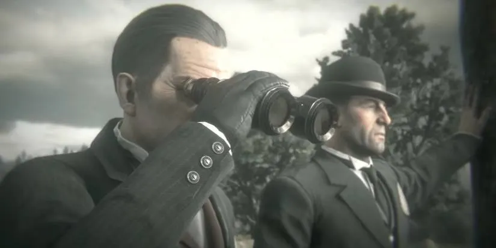
La vida de John cambia por completo cuando aparece Edgar Ross, un agente del gobierno que representa el nuevo rostro del poder en este mundo. Ya no son forajidos persiguiendo a otros forajidos. Ahora es el Estado el que mueve las piezas, usando el discurso de la ley para obligar a John a cumplir una misión bajo amenaza.
Ross sabe muy bien cómo presionar a John. Le ofrece una falsa salida: si coopera y caza a los últimos miembros de su antigua banda, podrá volver con su familia. Pero en realidad no existe una promesa sincera detrás de esa propuesta. Lo que hay es manipulación, control y una cadena invisible que pretende mantener a John trabajando para ellos hasta que ya no les sirva más.
Este es uno de los puntos más importantes de toda la historia, porque deja claro que el poder ya no está solamente en los fusiles o en las bandas. El poder ahora también está en la burocracia, en los uniformes y en los hombres que saben usar la ley como una herramienta para destruir vidas.
Capítulo 3 – La búsqueda de Bill Williamson
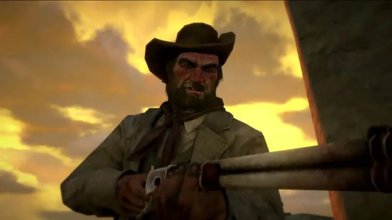
La primera misión de John lo lleva a perseguir a Bill Williamson, uno de los antiguos miembros de la banda de Dutch. Bill no es solo un objetivo militar o político; también es un reflejo de lo que quedó del mundo viejo. Se ha convertido en un líder torpe, brutal y paranoico, alguien que intenta conservar una identidad de forajido en una época donde esa forma de vida ya no tiene futuro.
Cuando John llega a enfrentarlo, se encuentra con un hombre completamente atrapado en sus contradicciones. Bill ya no representa la visión de libertad de Dutch ni la disciplina de Arthur. Representa la decadencia total de una banda que se rompió por dentro y que siguió sobreviviendo por pura inercia.
La búsqueda de Bill también sirve para mostrar cómo el pasado de John vuelve a perseguirlo en cada rincón. Cada antiguo conocido es una prueba de que, por más que quiera empezar de cero, siempre habrá alguien o algo dispuesto a recordarle quién fue.
Capítulo 4 – Nuevo Paraíso y la guerra en México

Después de seguir el rastro de Bill, John termina cruzando a México, donde la historia se expande y adquiere una escala política más compleja. Allí se ve envuelto en el conflicto entre facciones militares, líderes locales y movimientos revolucionarios, lo que transforma su misión en algo más grande que una simple cacería.
México en Red Dead Redemption no es solo un escenario exótico. Es un territorio desgarrado por la guerra, la ambición y el abuso de poder, donde John vuelve a encontrarse atrapado en una lucha que no inició y que no puede controlar del todo. El país refleja, de otra manera, el mismo tipo de violencia que destruyó la vida de los forajidos en Estados Unidos.
Allí conoce a personajes como Abraham Reyes y el coronel Allende, figuras que representan dos formas distintas de manipular el poder. John, una vez más, queda en el medio, intentando avanzar sin convertirse en un peón permanente de nadie. México amplía la historia, pero también confirma que el caos y la corrupción no tienen fronteras.
Capítulo 5 – Javier Escuella y los restos de la vieja banda
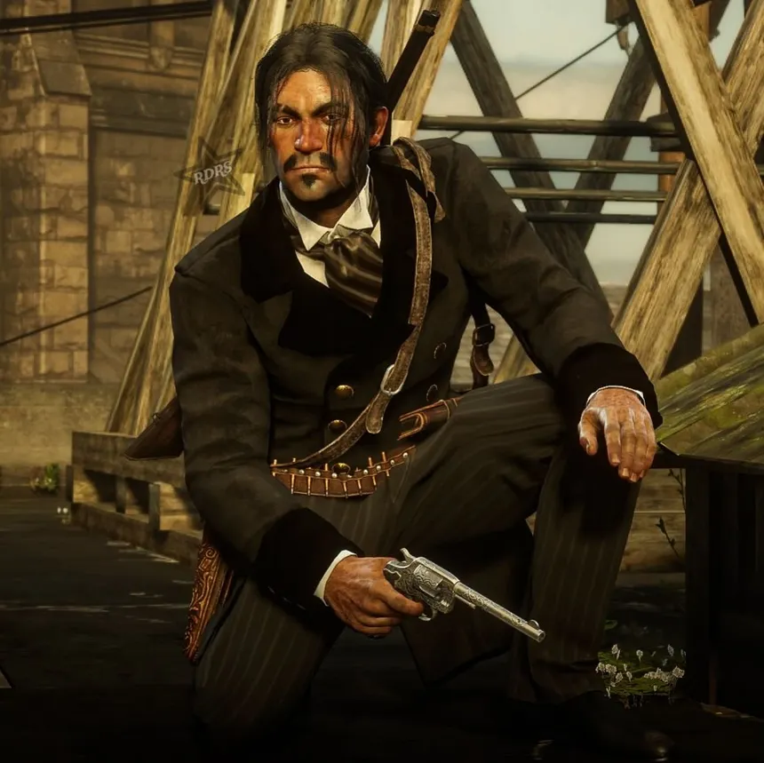
Javier Escuella es otro de los miembros que John debe perseguir. Su aparición vuelve a conectar la historia con los recuerdos de la banda de Dutch y con la idea de que, en realidad, John está cazando los fragmentos de su propia vida anterior.
Javier encarna la lealtad llevada al extremo, pero también la descomposición de esa misma lealtad cuando el grupo original ya no existe. Como Bill, es un hombre que intenta seguir moviéndose dentro del mundo de los forajidos, aunque ese mundo ya casi no exista. John lo persigue no solo porque el gobierno se lo ordena, sino porque cada encuentro le recuerda que el pasado no se fue, sino que quedó disperso en cuerpos y nombres distintos.
Esta parte de la historia hace que John se enfrente a una verdad incómoda: la banda no desapareció de golpe. Se fue pudriendo poco a poco, y él está viendo los restos más visibles de esa descomposición.
Capítulo 6 – Dutch van der Linde
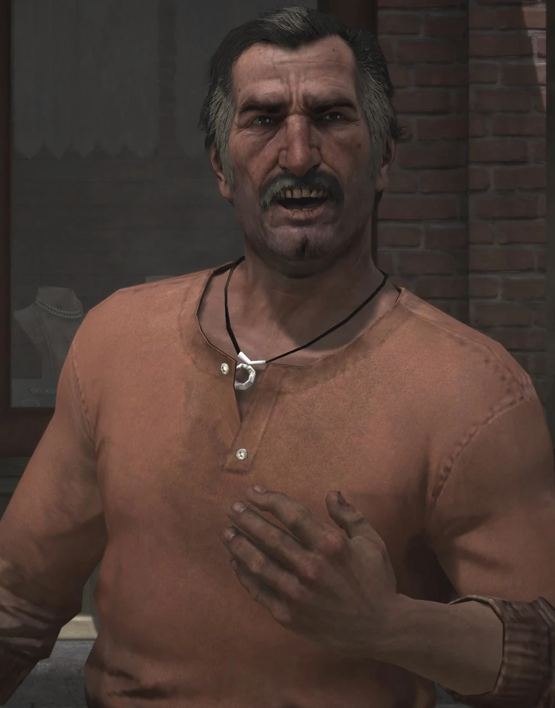
El reencuentro con Dutch van der Linde es uno de los momentos más importantes de toda la saga. Dutch fue el líder que moldeó a John, el hombre que le enseñó una forma de entender la libertad, la violencia y la vida fuera de la ley. En la historia de Red Dead Redemption, sin embargo, John encuentra a un Dutch muy distinto al de los recuerdos idealizados.
Dutch aparece como un hombre cansado, roto y profundamente desencantado. Su visión del mundo ya no tiene la fuerza que alguna vez tuvo. Lo que antes parecía un sueño de independencia y comunidad ahora se siente como una idea que se desmoronó por dentro. La banda ya no existe, los ideales se perdieron y Dutch ha quedado atrapado en la derrota de su propia filosofía.
Este encuentro cierra emocionalmente una parte enorme de la historia de la saga, porque muestra que incluso los líderes carismáticos pueden terminar destruidos por el mismo mundo que intentaron desafiar. John no solo persigue a Dutch por órdenes del gobierno, sino también porque necesita cerrar ese capítulo de su vida.
Capítulo 7 – La vida en un mundo que ya cambió
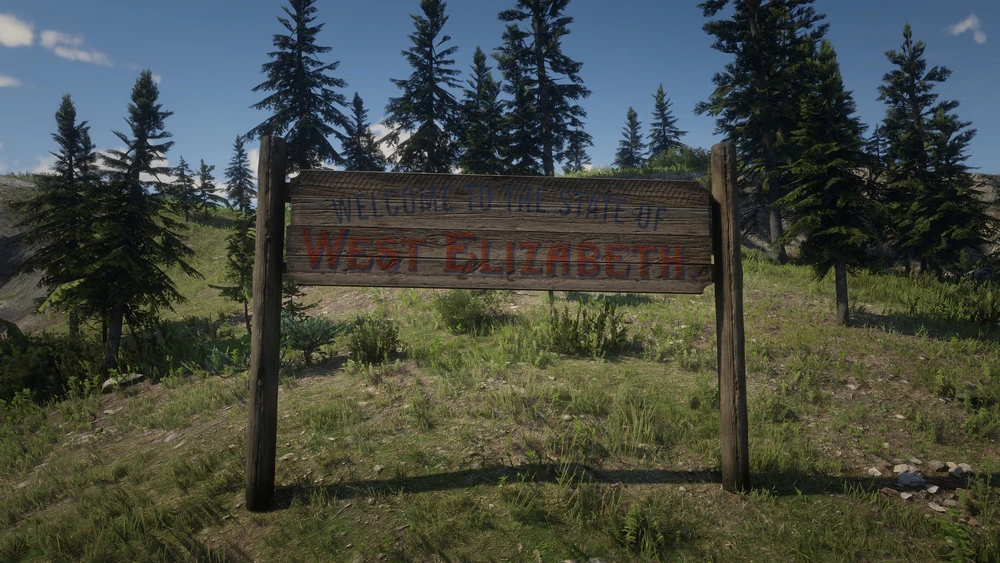
A medida que John avanza, el juego deja claro que el Viejo Oeste ya está muriendo. Los trenes, las ciudades más grandes, la presencia militar, el orden impuesto y la expansión del Estado muestran que la época de los forajidos está llegando a su fin. John es prácticamente un anacronismo: un hombre que todavía vive como si el mundo de su juventud siguiera existiendo.
Ese cambio de mundo es una de las ideas más fuertes de la saga. Red Dead Redemption no trata solo de perseguir criminales. Trata de observar cómo una forma de vida desaparece y cómo los hombres que dependían de ella quedan desubicados, inútiles o directamente destruidos.
John intenta adaptarse, pero cada paso le demuestra que ya no tiene cabida en ese nuevo orden. El gobierno usa su pasado como arma, las antiguas lealtades se rompen y el sueño de una vida tranquila parece cada vez más difícil de sostener. La historia crea una sensación constante de final inevitable.
Capítulo 8 – Abraham Reyes, la revolución y la ilusión del cambio
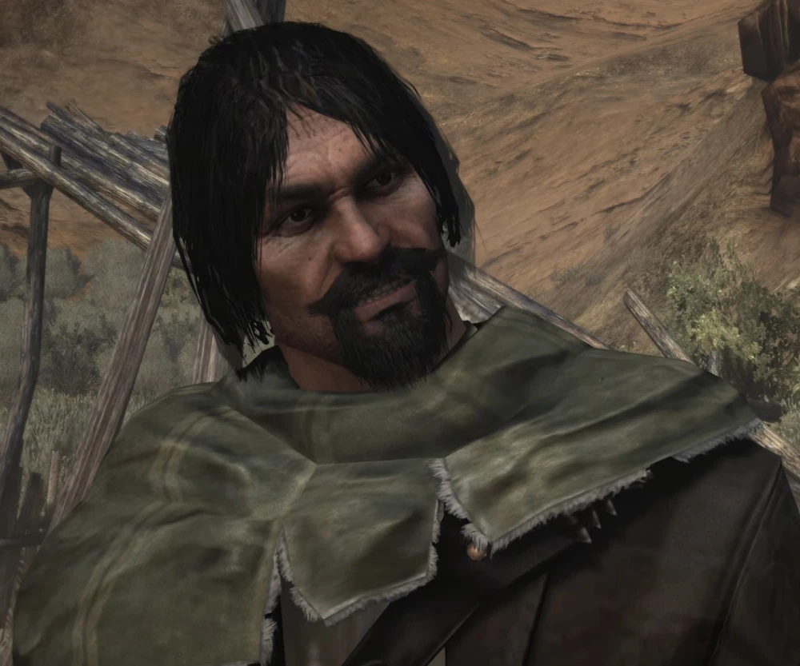
En México, John entra en contacto con Abraham Reyes y con los conflictos revolucionarios del lugar. Reyes representa la ambición política disfrazada de idealismo, una figura que promete cambio pero que también está llena de ego y de deseos personales.
La revolución mexicana en el juego funciona como un espejo de la historia principal. Así como Dutch prometía libertad y terminó hundido en su propia contradicción, Reyes promete futuro y gloria, pero también deja ver el mismo tipo de manipulación que termina corrompiendo los movimientos que dicen luchar por el bien común.
John se encuentra otra vez en una posición incómoda: ayuda a una causa que no le pertenece del todo, mientras intenta sacar algo útil de cada vínculo temporal. Pero el juego nunca deja de recordarle que ninguna alianza en este mundo es realmente segura.
Capítulo 9 – La desilusión total
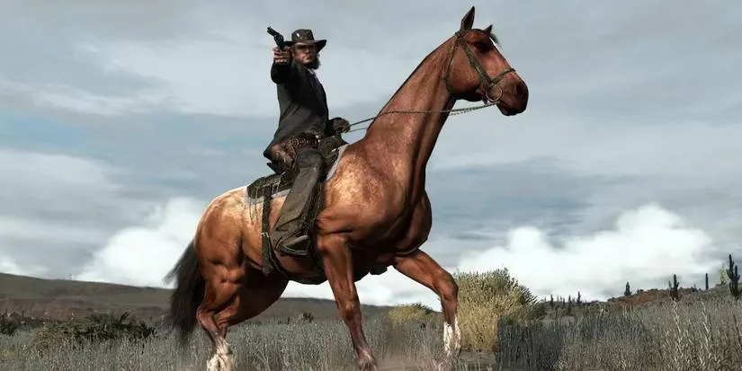
Cuanto más avanza la historia, más claro queda que John no está construyendo una nueva vida, sino corriendo hacia una nueva forma de pérdida. Él hace todo lo que le piden, cumple con las misiones, ayuda a las personas que puede y se esfuerza por volver con su familia, pero el sistema que lo está usando no tiene intención de liberarlo de verdad.
La desilusión es progresiva. John entiende que el pasado no se cierra solo porque uno quiera. A veces hace falta un costo brutal para terminar de romper con él. Y aun así, incluso cuando lo comprende, sigue adelante porque su familia es lo único que le importa de verdad.
Ese conflicto entre lucidez y esperanza hace que John sea un protagonista tan trágico. Sabe que el mundo está hecho para aplastarlo, pero no deja de intentar encontrar una salida.
Capítulo 10 – El regreso a casa
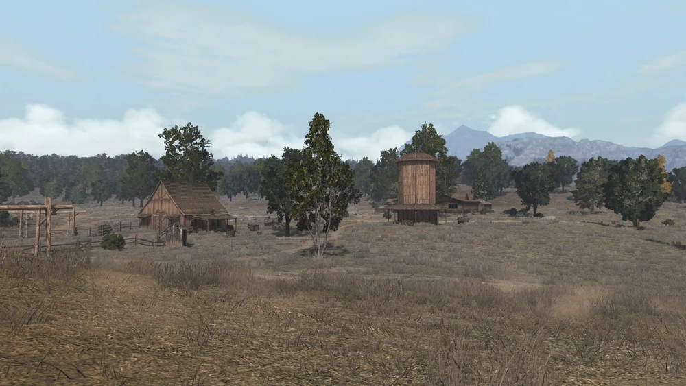
Después de cumplir con su parte del trato, John logra regresar a Beecher’s Hope. Por un momento parece que la pesadilla terminó. La familia está de vuelta, el rancho existe y la vida tranquila que él quería por fin parece al alcance de su mano.
Pero esta calma es breve y engañosa. El gobierno nunca dejó de observarlo y Ross nunca pensó en cumplir con una promesa real. La historia construye este regreso como una pausa tensa antes de la tragedia final, reforzando la idea de que en este mundo la felicidad es siempre temporal.
John ha hecho todo lo posible por redimirse, pero la redención no garantiza supervivencia. Ese es uno de los mensajes más dolorosos de toda la saga.
Capítulo final – La masacre en Beecher’s Hope
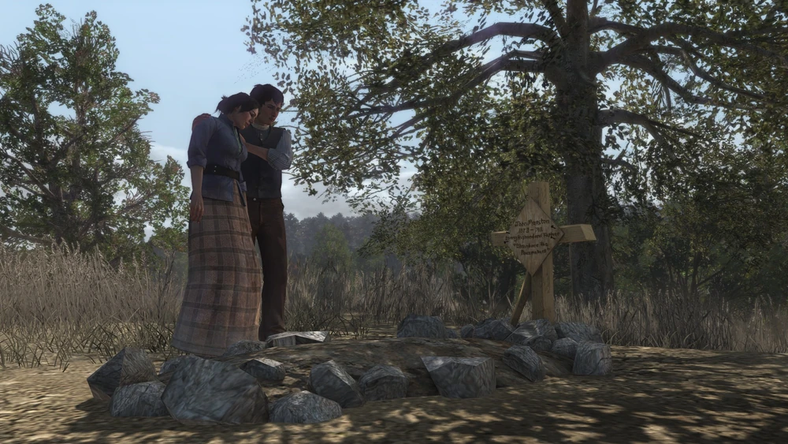
El final de Red Dead Redemption es devastador. Cuando el gobierno decide que John ya no les sirve, lanzan un ataque contra Beecher’s Hope. John intenta defender a su familia y compra el tiempo necesario para que Abigail y Jack puedan escapar, pero sabe desde el principio que no va a salir vivo de esa situación.
Su sacrificio es el cierre perfecto de una historia construida sobre pérdidas, lealtad, manipulación y el deseo de ser mejor que el pasado. John muere protegiendo aquello que más ama, y con ello completa su arco como un hombre que finalmente logra elegir por qué vale la pena morir.
Años después, Jack Marston crecerá con el peso de ese recuerdo y con la semilla de la venganza. Así, la saga cierra el círculo del Viejo Oeste: primero con la caída de Arthur y la banda de Dutch, y después con la muerte de John, dejando claro que ninguna era termina sin sangre.
Red Dead Redemption 2 – Historia completa
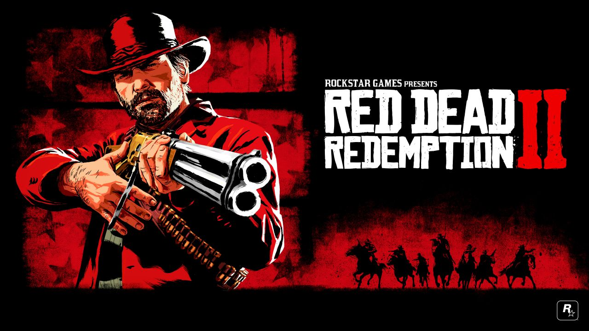
Red Dead Redemption 2 es una precuela de Red Dead Redemption y cuenta la historia del principio del fin del Viejo Oeste. Ambientado en 1899, el juego muestra cómo la banda de Dutch van der Linde comienza a desmoronarse mientras el mundo cambia de forma irreversible. La ley avanza, las ciudades crecen y los forajidos ya no tienen lugar.
El protagonista es Arthur Morgan, uno de los miembros más leales y peligrosos de la banda. A través de su historia vemos cómo una vida basada en la violencia, la lealtad ciega y la supervivencia empieza a romperse desde adentro. Esta no es solo una historia de crimen, sino de redención, decisiones y consecuencias.
Capítulo 1 – Blackwater y la huida

La historia comienza después de un desastre: el atraco fallido en Blackwater. Aunque el jugador no ve directamente lo que ocurrió, sus consecuencias son devastadoras. La banda pierde dinero, miembros y estabilidad, quedando completamente expuesta ante la ley.
Obligados a huir, los Van der Linde se refugian en las montañas nevadas. Este inicio marca el tono del juego: no estamos viendo una banda en su mejor momento, sino un grupo que ya está herido y tratando de sobrevivir. Arthur aparece como el ejecutor principal, cumpliendo órdenes y manteniendo el grupo a flote.
Capítulo 2 – Colter y la supervivencia
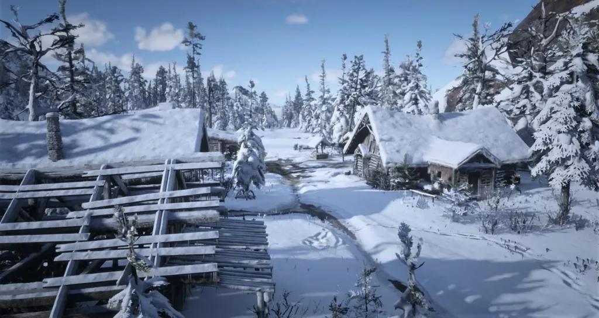
En Colter, la banda intenta reorganizarse. La nieve, el hambre y la falta de recursos reflejan la situación real del grupo: están al borde del colapso. A pesar de esto, Dutch sigue hablando de planes, dinero y un futuro mejor.
Aquí se presentan los personajes principales y sus dinámicas. Hosea representa la razón, Arthur la lealtad práctica, y Dutch la visión idealista que empieza a volverse peligrosa. Desde el inicio ya se perciben grietas internas.
Capítulo 3 – Horseshoe Overlook
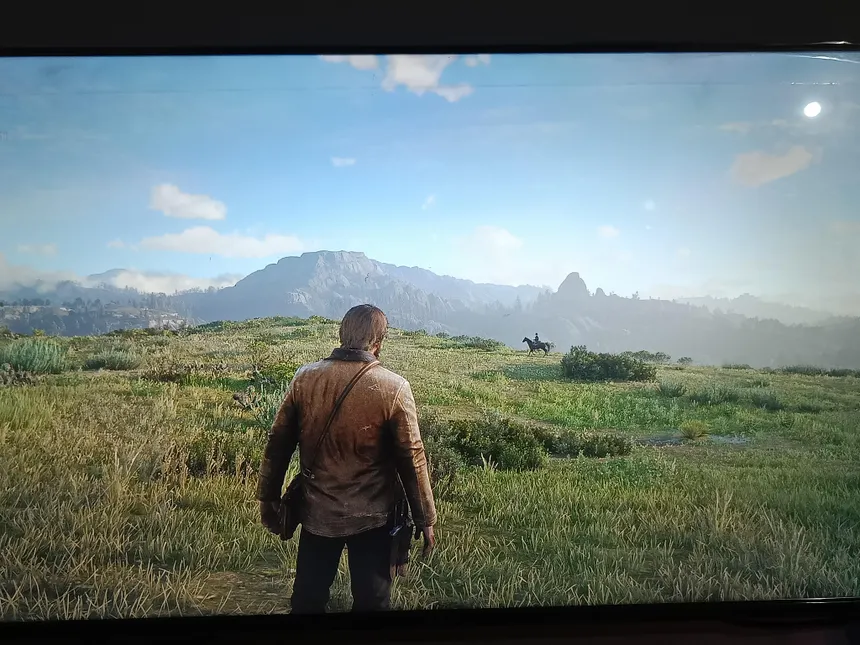
La banda se traslada a Horseshoe Overlook, donde parece encontrar cierta estabilidad. Sin embargo, esta calma es engañosa. Para sobrevivir, deben seguir robando, estafando y enfrentándose a la ley.
Arthur comienza a mostrar más humanidad, interactuando con miembros del grupo y desarrollando relaciones más profundas. Se refuerza su vínculo con John Marston y su familia, lo que será clave para el futuro.
Capítulo 4 – Valentine y los conflictos
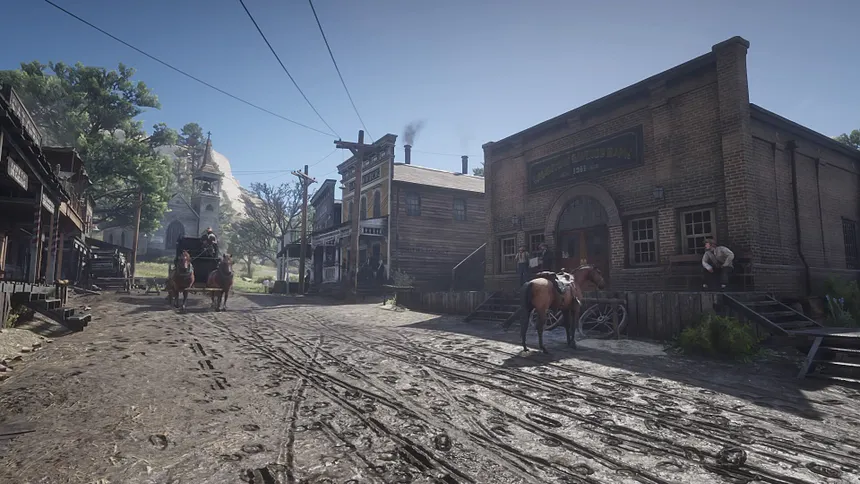
En Valentine, la banda se involucra en conflictos locales que escalan rápidamente. Lo que empieza como pequeñas operaciones termina atrayendo la atención de la ley y de enemigos peligrosos.
Dutch empieza a tomar decisiones más arriesgadas, confiando demasiado en su capacidad para controlar la situación. Arthur sigue obedeciendo, pero comienza a cuestionar algunas acciones.
Capítulo 5 – Rhodes y la guerra entre familias

La banda llega a Rhodes y se involucra en una guerra entre dos familias: los Braithwaite y los Gray. Intentan manipular ambos lados para obtener beneficios, pero el plan termina en tragedia.
Este capítulo marca un punto importante: la violencia ya no está controlada. Las consecuencias de sus acciones comienzan a ser irreversibles, y la banda sufre pérdidas importantes.
Capítulo 6 – Saint Denis y el gran golpe
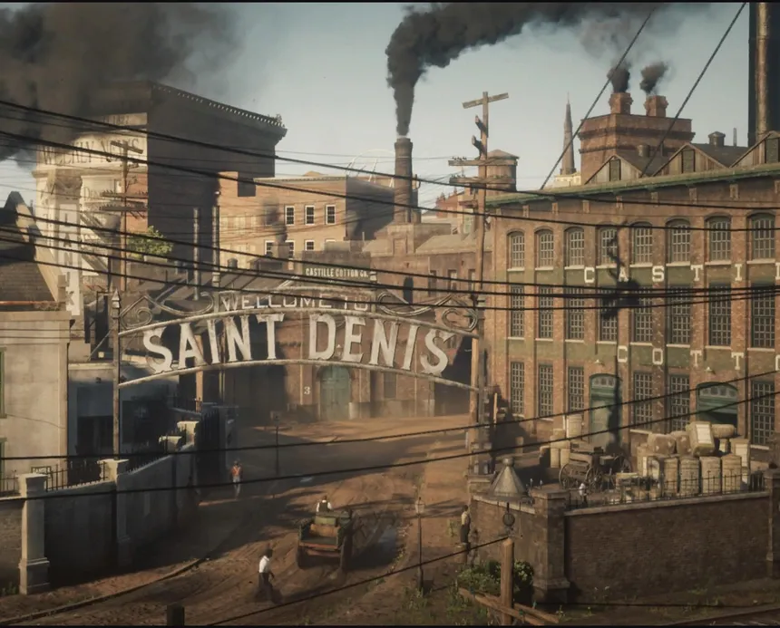
Saint Denis representa el mundo moderno. Es una ciudad grande, industrializada y completamente diferente al estilo de vida de la banda. Aquí queda claro que el Viejo Oeste está desapareciendo.
Dutch planea un gran robo que termina saliendo mal. Este evento es uno de los puntos de quiebre más importantes de la historia. La banda pierde aún más miembros y queda completamente desorganizada.
Capítulo 7 – Guarma

Tras el desastre en Saint Denis, Arthur y otros miembros terminan en la isla de Guarma. Este lugar representa el caos total: están lejos de casa, sin control y atrapados en un conflicto externo.
Guarma sirve para mostrar lo perdidos que están. Ya no tienen rumbo, ni plan, ni control sobre su destino. Cuando regresan, la banda ya no es la misma.
Capítulo 8 – Beaver Hollow y la ruptura
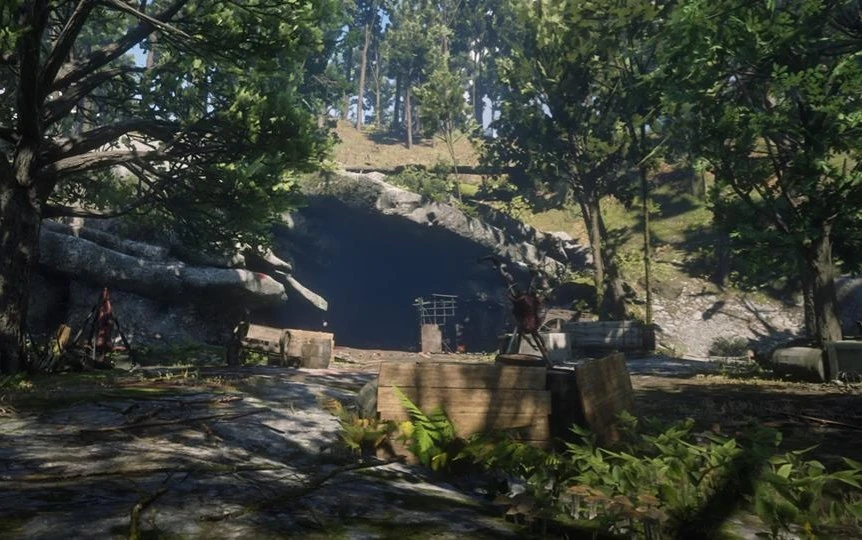
De vuelta en América, la banda se instala en Beaver Hollow. Este es el punto más oscuro de la historia. Dutch está completamente influenciado por Micah, la confianza se rompe y el grupo se divide.
Arthur descubre que tiene tuberculosis, lo que cambia completamente su perspectiva. Sabiendo que su tiempo es limitado, decide hacer lo correcto y ayudar a John a escapar.
Capítulo 9 – Arthur Morgan y la redención
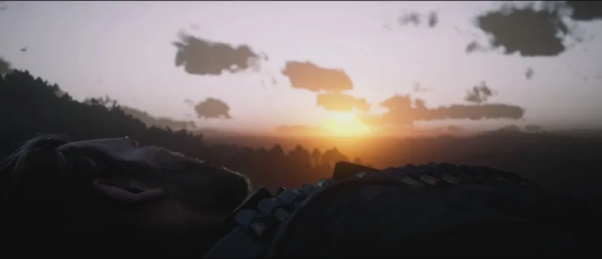
Arthur pasa de ser un forajido leal a un hombre que busca redimirse. Sus acciones finales están enfocadas en salvar a otros, especialmente a John y su familia.
Dependiendo de las decisiones del jugador, su final puede variar, pero en todos los casos representa un sacrificio. Arthur muere dejando atrás una vida de violencia y encontrando cierto grado de paz.
Capítulo 10 – Epílogo: John Marston

El epílogo sigue a John Marston intentando construir una nueva vida. Trabaja, forma un hogar y trata de dejar atrás su pasado, preparando el camino para los eventos de Red Dead Redemption.
Finalmente, John enfrenta a Micah Bell junto a Dutch. Este enfrentamiento cierra el arco de la banda y conecta directamente con el inicio del primer juego.
Conclusión – El legado de Red Dead Redemption

La saga Red Dead Redemption no es solo una historia sobre forajidos y el Viejo Oeste, sino una reflexión profunda sobre el paso del tiempo, las decisiones y sus consecuencias. A lo largo de ambos juegos, vemos cómo un mundo entero desaparece lentamente, llevándose consigo a todos los que no pueden adaptarse a él.
Arthur Morgan representa la redención desde adentro. Es un hombre que vivió toda su vida dentro de la violencia, pero que en sus últimos momentos decide cambiar, ayudar a otros y darle a alguien más la oportunidad que él nunca tuvo. Su historia demuestra que incluso en un mundo brutal, todavía es posible hacer lo correcto.
John Marston, por otro lado, representa la lucha por escapar del pasado. A diferencia de Arthur, él logra salir parcialmente de esa vida, formar una familia y buscar algo diferente. Sin embargo, su historia deja claro que el pasado no siempre se puede dejar atrás, y que el sistema puede ser tan cruel como los propios forajidos.
Dutch van der Linde simboliza el ideal que se rompe. Lo que comienza como una visión de libertad y comunidad termina destruido por el ego, la paranoia y la incapacidad de aceptar que el mundo ha cambiado. Su caída refleja el fin de toda una era.
En conjunto, la saga muestra cómo el Viejo Oeste no murió de un día para otro, sino que fue desapareciendo lentamente, reemplazado por un mundo más moderno, pero no necesariamente más justo. Los personajes quedan atrapados entre esos dos mundos, sin pertenecer completamente a ninguno.
El legado de Red Dead Redemption es su capacidad para contar una historia humana dentro de un contexto histórico en transformación. No se trata solo de disparos o misiones, sino de personas que intentan sobrevivir, cambiar y encontrar un sentido en un mundo que ya no tiene lugar para ellas.
Al final, la saga deja una idea clara: no importa cuánto intentes escapar de tu pasado, siempre habrá un precio que pagar. Pero también deja algo más importante: incluso en los últimos momentos, siempre existe la posibilidad de elegir quién querés ser.
Personajes de Red Dead Redemption
A continuación se reúnen los personajes más importantes de Red Dead Redemption 2 y Red Dead Redemption, con su historia, trasfondo, importancia narrativa y el rol que cumplen en la caída del Viejo Oeste.
Arthur Morgan
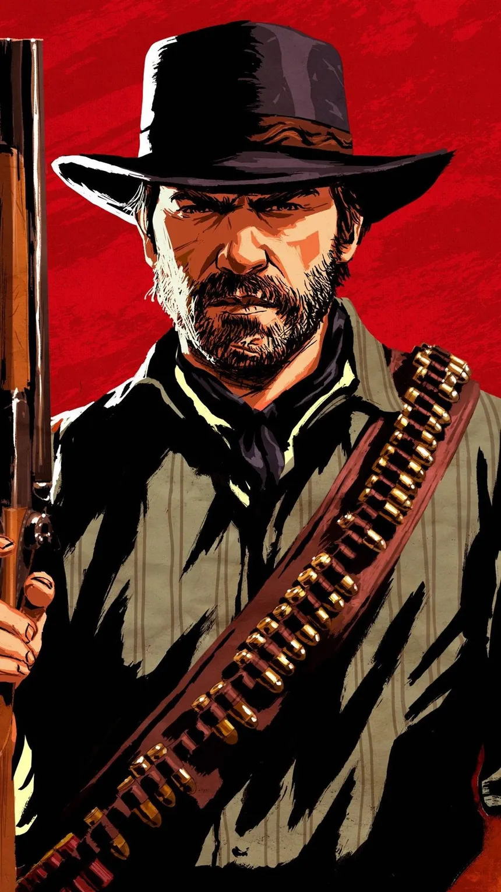
Arthur Morgan es el protagonista principal de Red Dead Redemption 2 y uno de los personajes más importantes de toda la saga. Fue criado dentro de la banda de Dutch van der Linde desde joven, por lo que su vida quedó completamente moldeada por la violencia, la lealtad y la supervivencia fuera de la ley.
Durante años, Arthur funcionó como el ejecutor más confiable de la banda: fuerte, frío, eficiente y dispuesto a hacer el trabajo duro sin hacer demasiadas preguntas. Sin embargo, su historia cambia de forma radical cuando empieza a ver con más claridad la decadencia de Dutch, la manipulación de Micah y el derrumbe del grupo al que dedicó toda su vida.
Su tuberculosis marca el punto de quiebre definitivo. Al saber que va a morir, Arthur deja de vivir solo para la banda y empieza a pensar en los demás, especialmente en John Marston y su familia. Su arco narrativo es uno de redención: pasa de ser un forajido leal a un hombre que intenta hacer lo correcto antes de morir.
Narrativamente, Arthur representa la tragedia del forajido que entiende demasiado tarde que el mundo que lo formó ya no existe. Su importancia está en que humaniza el fin del Viejo Oeste y le da a la saga su centro emocional más fuerte.
John Marston
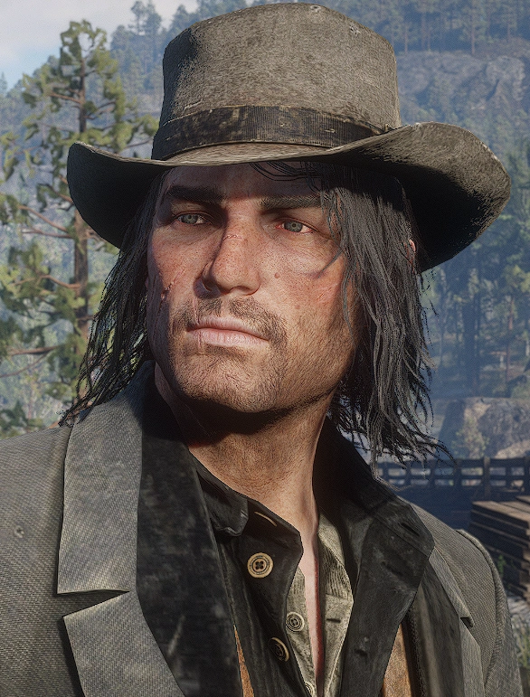
John Marston es el protagonista de Red Dead Redemption y una figura central en toda la saga. En RDR2 se lo ve más joven, inmaduro y todavía atrapado dentro de la banda de Dutch. Más adelante, en el primer juego, se convierte en un hombre que intenta escapar de ese pasado para construir una vida con Abigail y Jack.
Su historia está marcada por el conflicto entre la violencia y la familia. John no es un héroe perfecto, pero sí un hombre que intenta cambiar. El gobierno lo obliga a perseguir a los últimos miembros de su antigua banda, usando su pasado en su contra y empujándolo otra vez al mundo criminal que quiso dejar atrás.
Su importancia narrativa está en que representa la lucha por la redención después del caos. John no busca gloria ni poder; busca tranquilidad. Y precisamente por eso su historia es tan trágica: el mundo no le permite simplemente irse.
Su muerte al final del primer juego cierra uno de los arcos más importantes de Rockstar, convirtiéndolo en símbolo del precio de intentar vivir honestamente en un mundo corrupto.
Dutch van der Linde
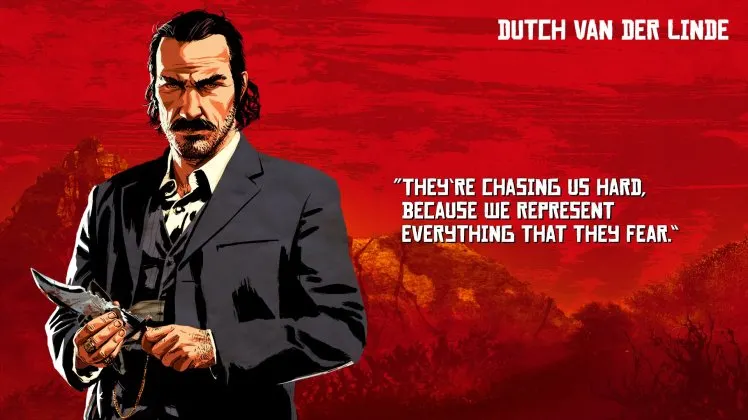
Dutch van der Linde es el líder de la banda y una de las figuras más complejas de la saga. En su mejor versión, Dutch fue un hombre carismático, idealista y capaz de reunir a personas marginadas bajo una promesa de libertad, comunidad y vida fuera del control del Estado.
Sin embargo, a medida que avanza la historia, ese ideal se quiebra. Dutch empieza a volverse más paranoico, más impulsivo y más dependiente de la violencia como solución. Micah alimenta ese deterioro, pero la verdad es que Dutch ya estaba cambiando desde antes: el peso del fracaso, la presión de la persecución y su propio ego terminan destruyéndolo desde dentro.
Narrativamente, Dutch representa la caída de un sueño. Su arco no es solo el de un líder criminal, sino el de una idea romántica del forajido que termina incapaz de sobrevivir a la modernidad.
Su importancia en la historia es enorme, porque toda la tragedia de ambas entregas gira alrededor de su visión del mundo, sus decisiones y su incapacidad de aceptar que su tiempo terminó.
Abigail Roberts / Marston
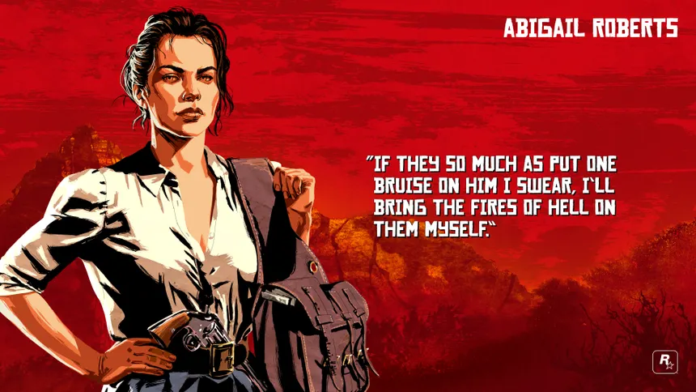
Abigail es una de las figuras más importantes del corazón emocional de la saga. Es pareja de John y madre de Jack. A diferencia de muchos personajes de la banda, ella siempre entiende con claridad que la vida criminal no puede ofrecerle un futuro real a su familia.
Su historia está atravesada por la lucha constante por estabilidad. Abigail ama a John, pero también lo presiona para que asuma sus responsabilidades y deje atrás la violencia. Esa tensión hace que su personaje sea una especie de conciencia moral dentro del caos.
Narrativamente, Abigail representa la idea de hogar en un mundo que destruye cualquier posibilidad de permanencia. Es una mujer fuerte, realista y profundamente afectada por las decisiones de los hombres que la rodean.
Jack Marston
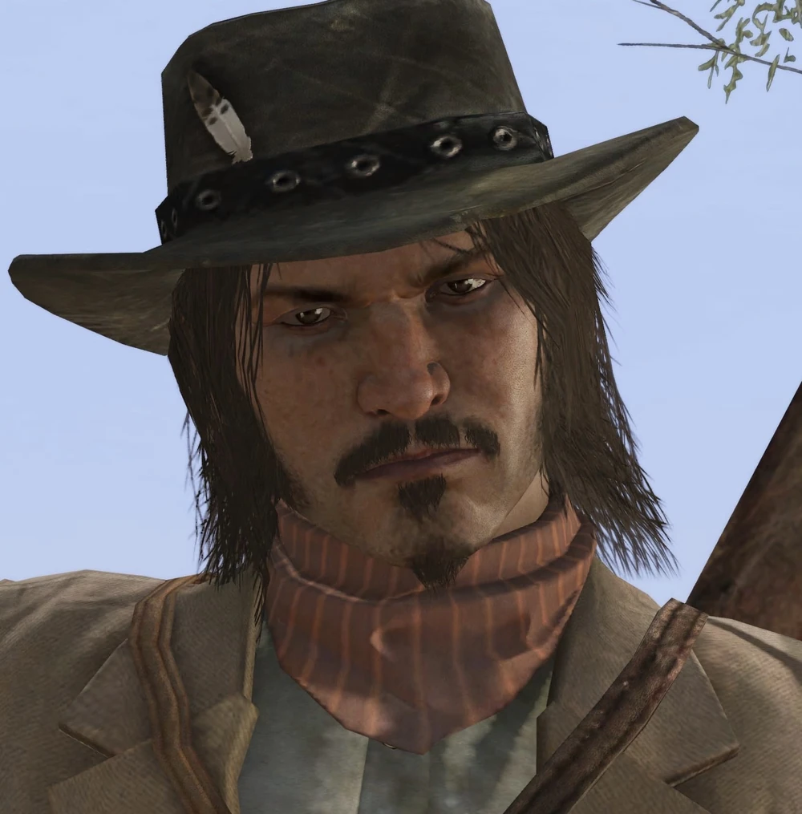
Jack Marston es el hijo de John y Abigail. En RDR2 aparece como un niño, mientras que en el epílogo y en el primer juego se convierte en el heredero del dolor, la violencia y las pérdidas de su familia.
Su infancia está marcada por la inestabilidad, la huida y la constante presencia del mundo criminal. Aunque es un personaje joven, su importancia narrativa es enorme porque representa la siguiente generación, la que carga con las consecuencias de todo lo anterior.
Jack es la última pieza del legado de los Marston. Su presencia cierra el círculo de la saga y muestra cómo la violencia se hereda aunque uno intente escapar de ella.
Sadie Adler
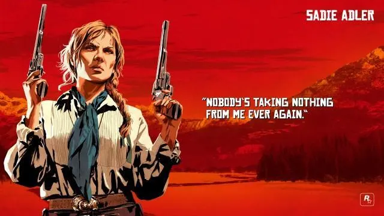
Sadie Adler comienza como una mujer destrozada por la tragedia. Tras perder a su esposo y ser atacada brutalmente, aparece como una sobreviviente consumida por el dolor y la rabia. Al principio está desorientada, pero con el tiempo se convierte en una de las figuras más fuertes del grupo.
Su evolución la transforma en una combatiente implacable, valiente y feroz. Sadie no solo sobrevive: aprende a vivir de nuevo, aunque lo haga desde una dureza extrema.
Narrativamente, Sadie representa la reconstrucción a partir del trauma. Su importancia está en que rompe con la idea de la víctima pasiva y se convierte en una fuerza propia dentro de la historia.
Hosea Matthews
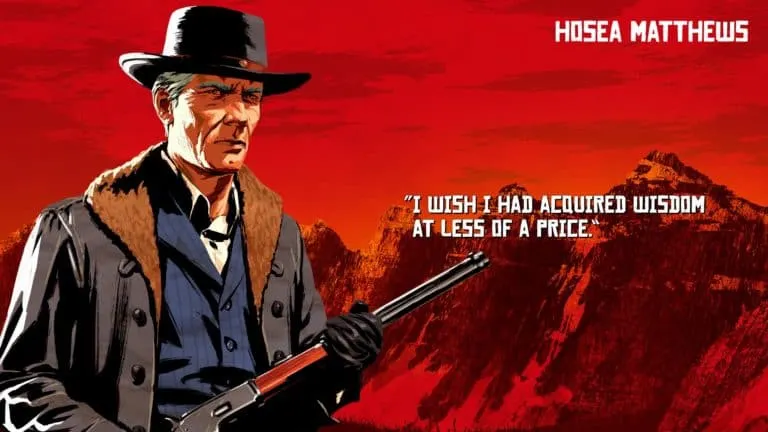
Hosea es el consejero más sensato de la banda de Dutch. Es inteligente, observador y mucho más prudente que el resto. Mientras otros miembros se dejan llevar por impulsos o por fantasías, Hosea suele ver con claridad el peligro real de cada situación.
Su relación con Dutch es fundamental porque ambos comparten un pasado de ideales, pero Hosea es el que mejor entiende que el mundo está cambiando y que la banda necesita adaptarse si quiere sobrevivir.
Narrativamente, Hosea funciona como la voz de la razón. Su muerte tiene mucho peso porque elimina una de las pocas fuerzas que todavía podían frenar el derrumbe de Dutch.
Micah Bell
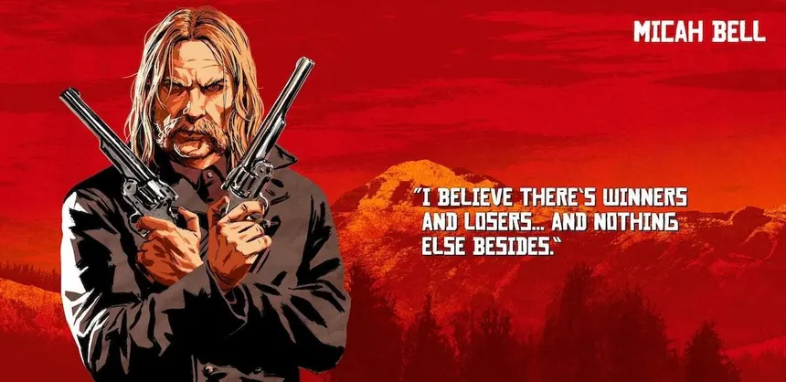
Micah Bell es uno de los antagonistas más odiados de la saga. Es violento, oportunista, manipulador y completamente incapaz de lealtad real. A diferencia de otros personajes complejos, Micah funciona como una corrupción casi pura dentro del grupo.
Su importancia narrativa está en que acelera la caída de Dutch. Micah sabe cómo aprovecharse de la paranoia, de la frustración y del orgullo de Dutch, empujándolo hacia decisiones cada vez peores.
Además, su relación con Arthur hace que el conflicto interno de la banda sea todavía más fuerte. Micah representa la traición y la descomposición moral desde adentro.
Sadie, Hosea, John y Arthur
Estos cuatro personajes forman el núcleo más humano de Red Dead Redemption 2. Cada uno representa una forma distinta de sobrevivir: Hosea con inteligencia, Arthur con lealtad y crecimiento, John con conflicto familiar y Sadie con transformación a partir del dolor.
La historia los usa para mostrar que no todo se reduce a criminales y policías. También hay personas intentando encontrar sentido, proteger a otros o, simplemente, vivir un poco mejor.
Bill Williamson
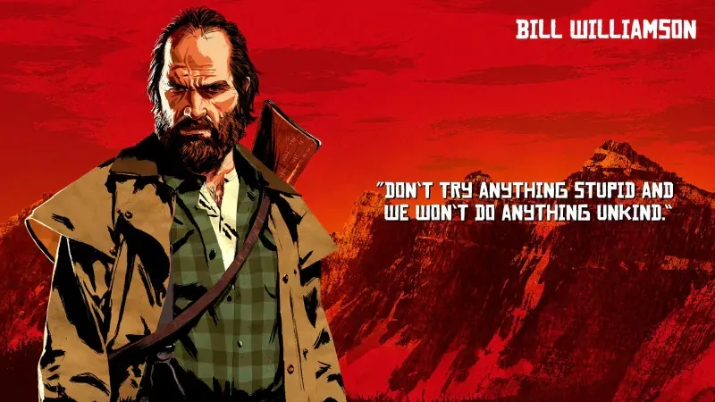
Bill es uno de los antiguos miembros de la banda de Dutch. En RDR2 ya se percibe como un hombre impulsivo y violento, y en Red Dead Redemption termina convertido en un líder torpe que intenta sostener un poder que ya no existe.
Narrativamente, Bill representa la decadencia del forajido que no sabe vivir fuera de la violencia. No tiene la profundidad de Arthur o Dutch, pero sí cumple un rol importante dentro de la caída final del viejo grupo.
Javier Escuella
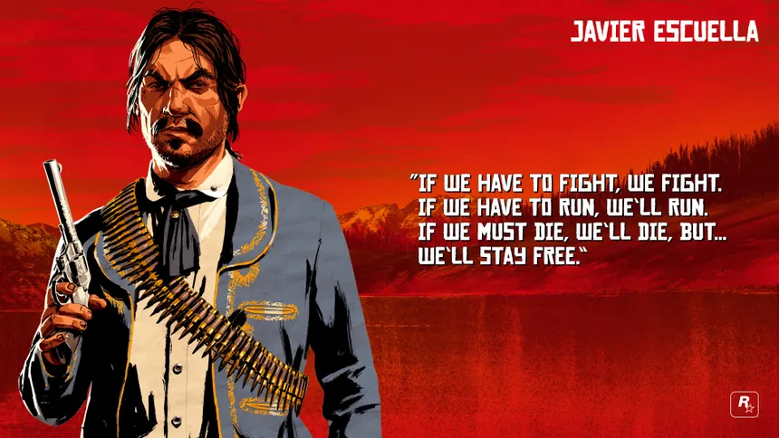
Javier es otro miembro de la banda que, con el paso del tiempo, queda atrapado entre lealtades rotas y contextos cada vez más inestables. Es carismático, hábil y muy cercano a Dutch, pero también termina siendo arrastrado por el derrumbe general.
Su importancia narrativa radica en que ayuda a mostrar cómo la banda se desintegró no solo por enemigos externos, sino también por la imposibilidad de sostener sus propios vínculos.
Edgar Ross
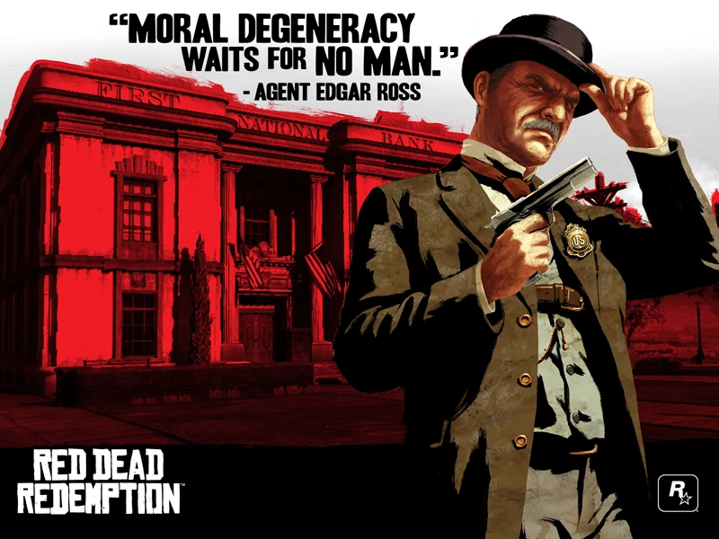
Edgar Ross es el rostro del poder estatal en Red Dead Redemption. No es un forajido, pero tampoco es un héroe. Representa un gobierno que usa la ley como instrumento de manipulación y violencia.
Su importancia narrativa está en que prueba que el mundo moderno también es cruel. Ross no necesita disparar como un bandido para ser peligroso; le basta con usar a John y luego descartarlo.
Abraham Reyes
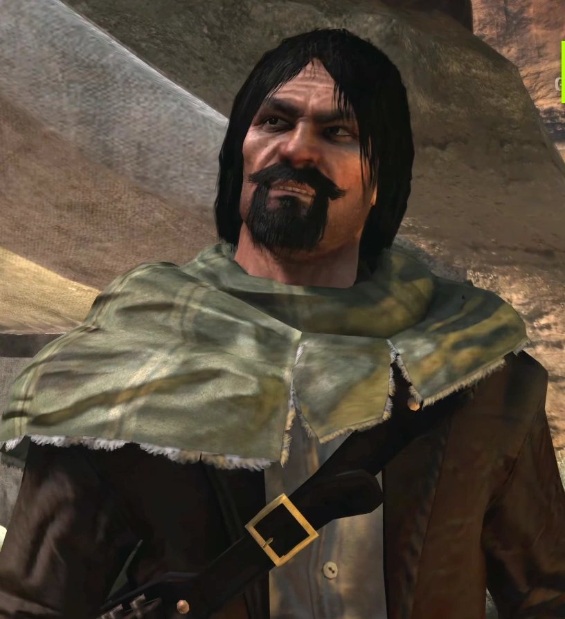
Reyes es uno de los personajes más importantes del tramo mexicano de Red Dead Redemption. Es carismático, ambicioso y políticamente astuto, pero también profundamente egoísta.
Su papel narrativo es mostrar que la revolución y el cambio también pueden ser corrompidos por el ego y el poder. Es una figura de transición entre ideales y oportunismo.
Bill, Javier y Dutch en Red Dead Redemption
En el primer juego, estos tres personajes funcionan como restos vivos del pasado de John. No son solo objetivos: son recordatorios de todo lo que la banda fue y de todo lo que se perdió. Cada uno muestra una forma distinta de caer: Bill en la brutalidad vacía, Javier en la lealtad desarmada y Dutch en el colapso total de un ideal.
Narrativamente, su papel es esencial porque obligan a John a mirar de frente el final de su vieja vida.
Conclusión de los personajes
Los personajes de Red Dead Redemption no están construidos solo para acompañar una historia del Viejo Oeste. Cada uno representa una idea: la lealtad, el cambio, el duelo, la ambición, la familia, la decadencia o la redención.
Arthur, John, Dutch, Abigail, Sadie, Hosea, Micah, Jack, Ross y los demás forman un retrato muy humano de una era que desaparece. Por eso la saga funciona tan bien: porque cada personaje carga una parte del final del mundo que habitan.
Finales de Red Dead Redemption 2
Red Dead Redemption 2 cuenta con varios finales que dependen directamente del nivel de honor de Arthur Morgan y de la última decisión importante que toma el jugador. Estos finales no cambian el destino inevitable del personaje, pero sí alteran el significado emocional de su historia y la forma en la que se cierra su arco de redención.
Final con honor alto – Ayudar a John (Mejor final)
Este es considerado el final más positivo y coherente con la evolución de Arthur. En esta ruta, Arthur decide ayudar a John Marston a escapar de la banda para que pueda reunirse con su familia y tener una nueva vida.
Durante la huida, Arthur enfrenta a Micah Bell mientras su enfermedad lo consume. Aunque no logra derrotarlo definitivamente, logra ganar el tiempo suficiente para que John escape. Finalmente, Arthur se arrastra hasta una montaña y observa el amanecer mientras muere en paz.
Este final representa la verdadera redención del personaje. Arthur acepta su pasado, pero decide hacer algo bueno antes de morir. La escena del amanecer simboliza un cierre tranquilo y digno.
Final con honor bajo – Ayudar a John
Si el jugador mantiene un nivel de honor bajo pero igualmente decide ayudar a John, el final cambia drásticamente en tono. Arthur sigue intentando hacer lo correcto en el último momento, pero su pasado violento pesa más.
En esta versión, Arthur no muere en paz. En lugar de un momento tranquilo, Micah termina ejecutándolo de forma brutal. No hay amanecer ni cierre emocional positivo.
Narrativamente, este final muestra que la redención no siempre es suficiente para borrar una vida de violencia. Arthur intenta cambiar, pero no logra escapar completamente de las consecuencias de sus acciones.
Final con honor alto – Volver por el dinero
En este camino, Arthur decide regresar por el dinero en lugar de ayudar directamente a John. Aunque todavía tiene honor alto, su decisión cambia el enfoque de su final.
Arthur enfrenta a Micah en un contexto más egoísta, pero aun así logra resistir lo suficiente. Finalmente, muere observando el amanecer, aunque con un tono más ambiguo.
Este final muestra que Arthur aún conserva parte de su humanidad, pero no logra completar del todo su arco de redención como en el final ayudando a John.
Final con honor bajo – Volver por el dinero (Peor final)
Este es el final más oscuro de todo el juego. Arthur, con bajo honor, decide volver por el dinero y termina enfrentando a Micah en una situación completamente desesperada.
En este caso, Micah mata a Arthur de forma violenta y sin ningún tipo de cierre emocional positivo. No hay redención, no hay paz, y el personaje muere como vivió: atrapado en la violencia.
Este final representa el fracaso total del arco del personaje. Arthur nunca logra cambiar realmente y termina siendo consumido por el mismo mundo que lo formó.
Final de Red Dead Redemption (John Marston)
A diferencia de Red Dead Redemption 2, el primer juego tiene un final fijo, pero profundamente impactante. Después de cumplir con todas las órdenes del gobierno y eliminar a los últimos miembros de su antigua banda, John regresa con su familia creyendo que finalmente es libre.
Sin embargo, el gobierno lo traiciona. En Beecher’s Hope, John es rodeado por agentes y soldados. En un acto final de sacrificio, decide salir y enfrentarlos para darle tiempo a Abigail y Jack de escapar.
John muere acribillado, cerrando su historia de forma trágica pero heroica. Este momento es uno de los más icónicos de la saga y refuerza el mensaje central: el pasado siempre tiene un precio.
Epílogo final – Jack Marston
Tras la muerte de John, el juego continúa con Jack Marston como protagonista. Años después, Jack crece y decide vengar la muerte de su padre enfrentando a Edgar Ross.
Este final cierra completamente la historia, mostrando que la violencia no desaparece, sino que se transmite. Jack logra su venganza, pero queda implícito que ha caído en el mismo ciclo que destruyó a su familia.
Narrativamente, este es el cierre definitivo de la saga: el Viejo Oeste ha terminado, pero sus consecuencias siguen vivas en la siguiente generación.